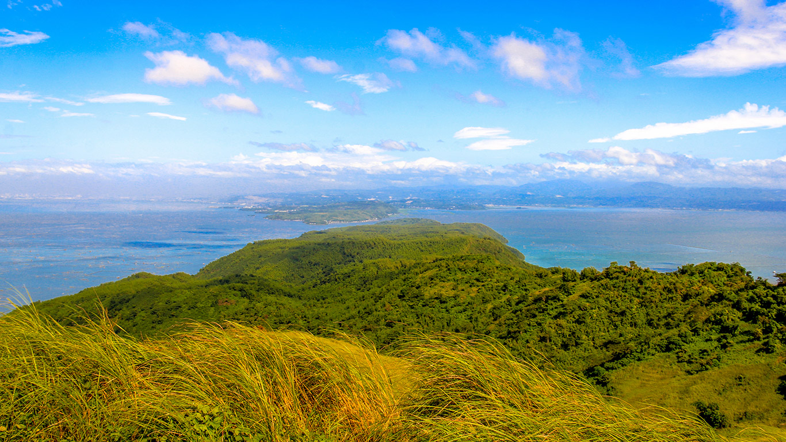
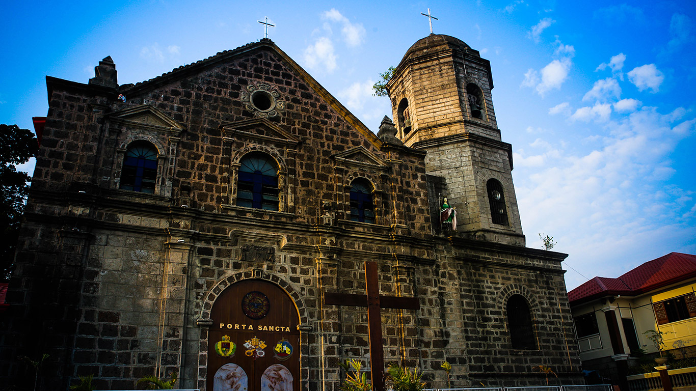

Tourist Attractions
Mount Tagapo Nature Park
 Rising supremely at 270 meters high above sea level is the majestic Mt. Tagapo Nature Park - a dream trekking site for amateur and professional mountaineers and outdoor enthusiasts alike. More popularly known as “Bundok ng Susong Dalaga“, it is located at the heart of Brgy. Janosa, Gulod and Sapang in which all have an access to its hilly terrains and ravines. It would take approximately 2 to 3 hours for one to get to its prized summit.
Puente Del Diablo
 Some call it Punta del Diablo. Yet, since punta is “point or up” in Spanish and the legend tells of a “bridge”, the proper terms seems to be the Spanish puente.
Puente del Diablo in Binangonan, Rizal is actually a peninsular hill about 20 meters high extending out some 100 meters in to the waters of Laguna de Bay. During summer when it has no vegetation growing from its many crags and cracks, its huge somewhat rectangular rocks give it the appearance of a ruined massive stone-bridge.
The legend of Puente del Diablo or the "devil's bridge" of Talim Island in Binangonan, Rizal is also the story of a young woman, her village, and how they find their strength in each other.
Some call it Punta del Diablo. Yet, since punta is “point or up” in Spanish and the legend tells of a “bridge”, the proper terms seems to be the Spanish puente.
Puente del Diablo in Binangonan, Rizal is actually a peninsular hill about 20 meters high extending out some 100 meters in to the waters of Laguna de Bay. During summer when it has no vegetation growing from its many crags and cracks, its huge somewhat rectangular rocks give it the appearance of a ruined massive stone-bridge.
The legend of Puente del Diablo or the "devil's bridge" of Talim Island in Binangonan, Rizal is also the story of a young woman, her village, and how they find their strength in each other.
Sta. Ursula Parish Church
 This over 200-year-old church is one of the most cherished edifices in the province. Built from 1792 until around 1800, the Sta. Ursula Parish Church in Brgy. Libid has undergone various renovations most notably in 1853 while preserving its original make up. Today, parishioners visit the church for its beauty, mystic aura and the unending promise of good, prosperous and fulfilling life.